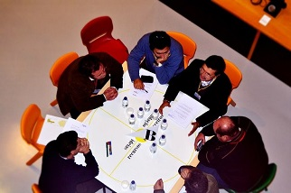

Principais atividades

- Rede estruturas de ação que facilita o acesso de interessados(as) aos programas e ações disponíveis;
- Estes Gabinetes permitem a promoção, desenvolvimento e reforço de competências, otimizando recursos, intervenções e potencialidades existentes nas comunidades, na perspetiva do empowerment e e visando a otimização da compatibilização entre necessidades das pessoas e organizações com as respostas disponíveis.